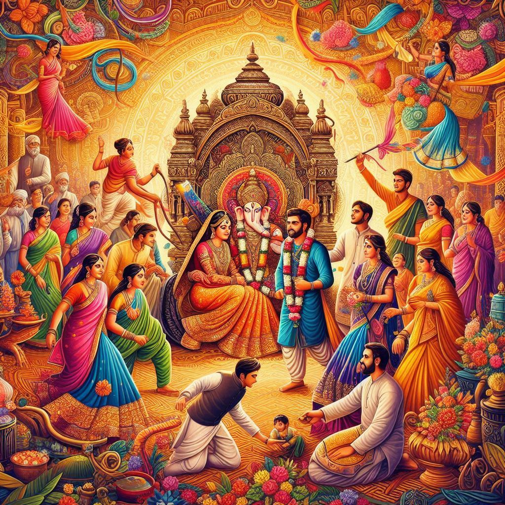
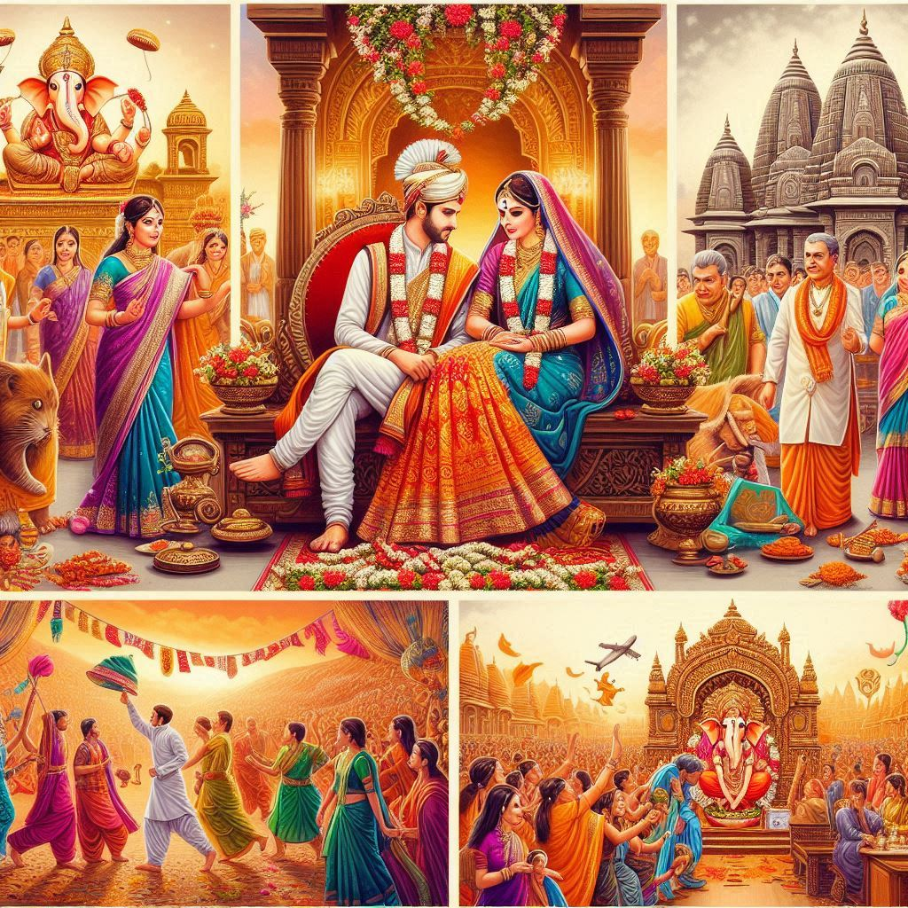

Traditions of Maharashtra
Maharashtra, with its rich history and diverse cultural heritage, is known for its unique traditions that are deeply rooted in its society. The traditions of Maharashtra reflect the state's vibrant culture, religious beliefs, and historical evolution, offering a mix of rural and urban customs.
1. Festivals
- Ganesh Chaturthi: This is one of the most important and widely celebrated festivals in Maharashtra. Devotees bring home Lord Ganesha idols and then immerse them in water after a series of prayers, songs, and cultural activities. The grand procession in Mumbai is renowned worldwide.
- Gudi Padwa: This marks the Marathi New Year and is celebrated with processions, family gatherings, and traditional food. A “Gudi” (a flag with a metal or cloth decoration) is hoisted outside homes to symbolize victory and prosperity.
- Makar Sankranti: Known for kite flying and the preparation of special foods like tilgul (a sweet made of sesame seeds and jaggery), this festival celebrates the harvest season and the transition of the sun into Capricorn.
- Navratri: A festival dedicated to the worship of Goddess Durga, celebrated with dance, music, and fasting. Dandiya and Garba dances are performed in many regions, especially in Mumbai and Pune.
- Diwali: The festival of lights, Diwali is celebrated with great enthusiasm, with families decorating their homes, bursting firecrackers, and worshiping Goddess Lakshmi for wealth and prosperity.
2. Folk Arts and Performing Arts
- Lavani: A traditional form of folk music and dance, Lavani is characterized by powerful rhythms and is often performed to the beats of the dholki. It has a distinctive style and is mainly performed during cultural festivals and occasions.
- Tamasha: A folk theater form that involves musical performances, storytelling, and dances. The performances are often accompanied by traditional instruments like the dholak.
- Koli Dance: The traditional dance of the Koli fishermen community, it is performed to honor the sea and the bounty it provides.
- Lezim Dance: A popular dance form that involves rhythmic movements using a traditional instrument called the Lezim. It is often performed during festivals and public events.
3. Cuisine Traditions
- Puran Poli: A sweet flatbread stuffed with a mixture of jaggery, lentils, and spices, often made during festivals like Gudi Padwa.
- Vada Pav: Often called the "Mumbai Burger," it’s a spicy potato filling inside a pav (bread roll), typically enjoyed as street food.
- Misal Pav: A spicy curry made from sprouted beans, served with bread rolls. It's a popular breakfast dish in Maharashtra.
- Sabudana Khichdi: A dish made from sago pearls, often eaten during fasting, especially during festivals like Makar Sankranti.
- Bhel Puri and Pani Puri: Popular street foods from Mumbai, known for their tangy and spicy flavors.


4. Traditional Clothing
- For Women:
- Nauvari Saree: The traditional saree worn by women in Maharashtra, also known as the 9-yard saree, which is draped in a unique style that allows for easier movement.
- Paithani Saree: Known for its rich silk and intricate zari work, the Paithani is often worn during weddings and other special occasions.
- For Men:
- Dhoti-Kurta: Traditional attire for men, especially during festivals and religious ceremonies. The kurta is paired with a dhoti (a cloth wrapped around the waist).
- Pugree (Turban): A prominent feature of Maharashtrian male attire, particularly for royalty or those involved in rural traditions.
- Leheriya: A traditional hand-dyed cloth, often worn during festive times, especially in rural parts of Maharashtra.
5. Religious Traditions
- Warkari Tradition: Devotees who follow the Warkari tradition undertake pilgrimages to the temples of Pandharpur and Alandi, where they sing devotional songs in honor of Lord Vithoba.
- Buddhist Influence: Maharashtra is home to significant Buddhist sites like Ajanta and Ellora, and Buddhism continues to influence the religious practices of the Dalit community in particular.
6. Marriage and Family Traditions
- Haldi Ceremony: A turmeric paste is applied to the bride and groom as a cleansing ritual before the wedding.
- Saptapadi: During the wedding, the couple takes seven steps around the sacred fire, symbolizing their vows to each other.
- Shubhamangal: A tradition where married women gather to offer blessings to the newlyweds, often involving the giving of gifts and sweets.
7. Rural Traditions
In rural Maharashtra, traditional practices such as Jatra (temple fairs), Koli dances, and bullock cart races are common, particularly in farming communities. These festivals celebrate harvests and honor local deities.
The traditions of Maharashtra, deeply rooted in history, folklore, religion, and daily life, reflect the state's diversity and vibrant cultural landscape. From grand festivals to culinary delights and dance forms, the traditions of Maharashtra continue to play an essential role in defining the cultural identity of the state.